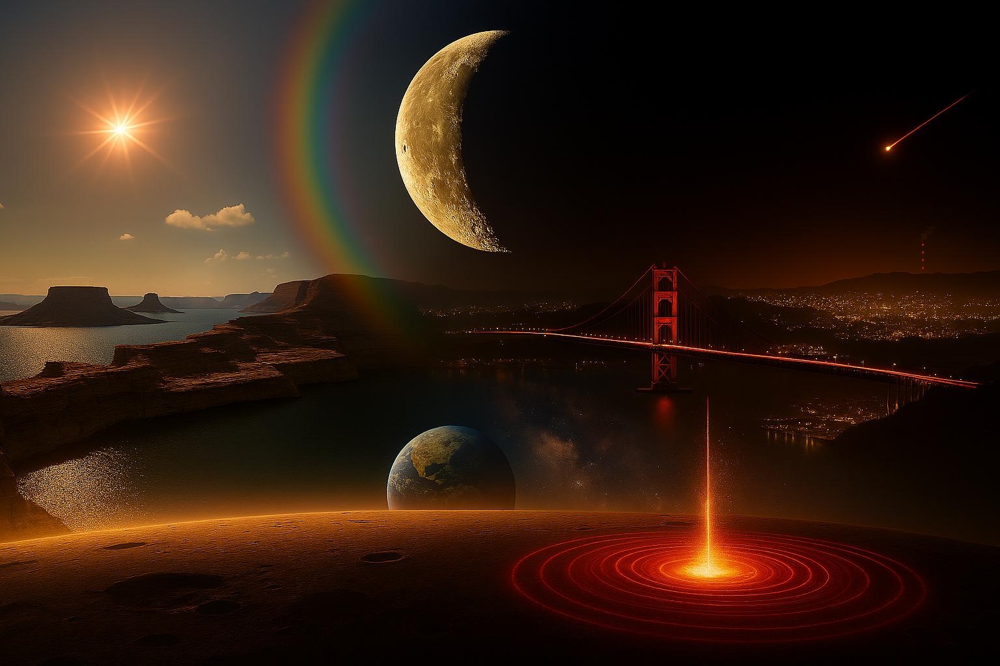

研究室ロゴマーク
ロゴマークは、「高速流動現象の解明」、それを支える「先端的な光学計測技術」という、二つの主要テーマを凝縮したシンボルです。
- 頭文字（H, S, G）： 研究室名 High Speed Gasdynamics Lab.の核となる頭文字を表現しています。特に、HとGから伸びてロゴ全体を取り囲む黒い線によって規定される領域は、研究の舞台である風洞試験部内を象徴しています。この全体像は、超音速流れの中に発生する衝撃波を可視化計測しているというコンセプトに基づき構成されています。
- 「H」を突き抜ける赤い線： **レーザー光**を象徴しており、光学的アプローチの根幹をなす極めて精密な計測技術が、当研究室の活動を支える技術的根幹であることを示唆しています。
- 「S」の色彩と形状： **衝撃波による急激な密度上昇**をイメージしており、特に**レインボーシュリーレン偏向法による定量計測結果**が持つ、精密さと色彩の美しさを表現しています。
- 「G」の内部と左側の灰色の縞模様： **マッハ・ツェンダー干渉計とトワイマン・グリーン干渉計**によって得られる**干渉縞**のイメージであり、密度場の精密解析を表します。
ホームページ背景画像

背景画像は、単なる風景ではなく、**「高速流動現象を光学計測技術で解明し、未来の科学技術に貢献する]**という、研究室のミッションを壮大なスケールで視覚化しています。
- 左側の昼の景色（過去）： アメリカ合衆国のユタ州とアリゾナ州に広がる**パウエル湖**の古代的な景観を示しています。これは、SF映画『猿の惑星』（1968年公開）で宇宙船が不時着した場所として知られており、過去と未知の世界を象徴します。時間軸の概念的な始まりを示し、研究の原点である「未知への挑戦」を暗示しています。
- 右側の夜の景景（現代）： 研究拠点である**北九州市の皿倉山**からの美しい夜景（日本三大夜景）であり、若戸大橋を含むこの景観は、**現代**の科学技術と研究室の所在地を示しています。
- 下側の宇宙視点（未来）： 宇宙から地球を見下ろす構図は、人類が未来に住む**ある惑星から地球を見つめる視点**を表現しています。これは**未来への探求と未知の世界への挑戦**を象徴し、研究室のビジョンを示唆します。
- 虹色の円弧（超音速流れと衝撃波）： 鈍頭物体周りのへさき衝撃波をイメージしています。衝撃波を境に、**昼夜の風景が不連続に遷移**しており、**超音速流れ**における**物理的な不連続性**を表現しています。
- 三日月と流れ星（光学機器）： 三日月は光学レンズ、流れ星はレーザー光を象徴し、研究室の根幹である精密な光学計測機器を示唆しています。
- 虹色と縞模様（基盤技術）： 虹色は**レインボーシュリーレン偏向法**、縞模様は**レーザー干渉法**による計測結果をイメージしています。これらは、高速流動現象の精密な可視化と解析を可能にする研究室の基盤技術です。